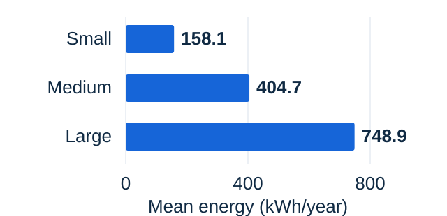
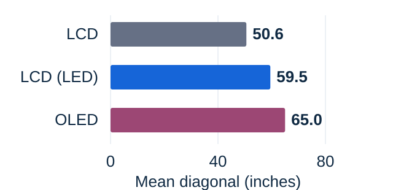
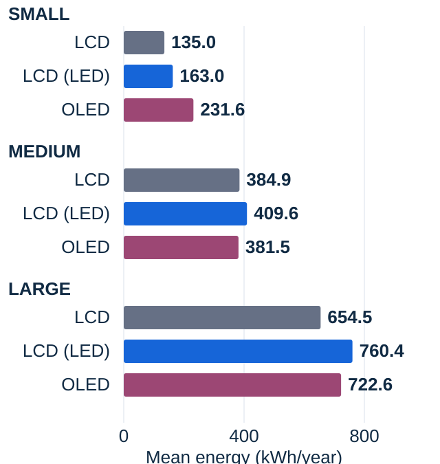

01 / Start with screen size
Larger groups use more energy on average.
Small-screen registrations average 158.1 kWh/year. The large-screen group averages 748.9 kWh/year. In this dataset, the average rises across all three size groups.

| Group | Rounded diagonal | Records | kWh/year |
|---|---|---|---|
| Small | ≤43 inches | 1,111 | 158.1 |
| Medium | 44–65 inches | 2,059 | 404.7 |
| Large | ≥66 inches | 1,338 | 748.9 |
Groups use the measured diagonal converted from cm to inches, then rounded. They are analysis choices, not official size categories. Mean includes high-energy models; the association does not establish a causal effect for a particular TV.
02 / Check the size mix
OLED models are larger on average.
OLED registrations average 65.0 inches, compared with 59.5 inches for LCD (LED) and 50.6 inches for LCD. Technology groups therefore contain different mixes of screen sizes.

| Technology | Records | Mean inches |
|---|---|---|
| LCD | 562 | 50.6 |
| LCD (LED) | 3,658 | 59.5 |
| OLED | 288 | 65.0 |
These counts describe registration records. They do not measure sales market share or consumer preference.
03 / Compare within a size group
A technology label is not the whole answer.
In the medium group, OLED averages 381.5 kWh/year and LCD (LED) 409.6 kWh/year. In the small group, their order reverses. This supports comparing size and energy together instead of ranking technologies by one overall average.

| Technology | Small | Medium | Large |
|---|---|---|---|
| LCD | 135.0 | 384.9 | 654.5 |
| LCD (LED) | 163.0 | 409.6 | 760.4 |
| OLED | 231.6 | 381.5 | 722.6 |
The small OLED group has only 17 registrations. These broad bands still contain different exact sizes and features. Group averages describe this snapshot; they do not prove that one technology causes lower energy use.
Your next comparison
Compare the TV you need, then its energy label.
- Choose the screen size that meets your needs.
- Compare labelled kWh/year between similar-sized models.
- Read the star rating alongside energy consumption. Equal stars do not mean equal annual energy.
How the official Energy Rating label supports TV comparisons